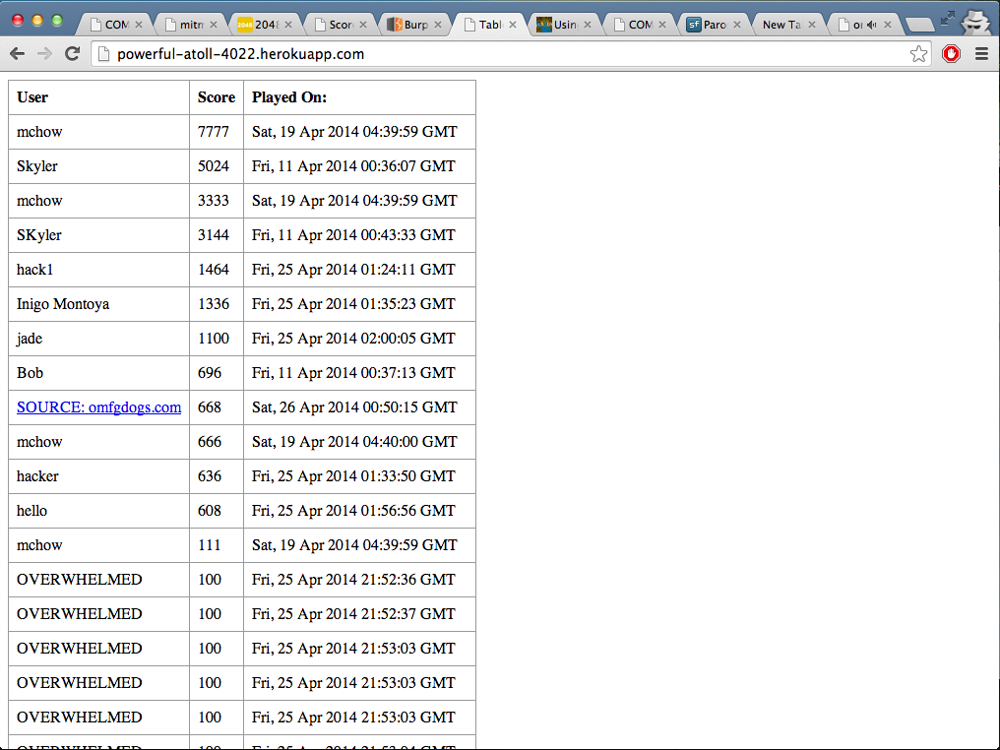
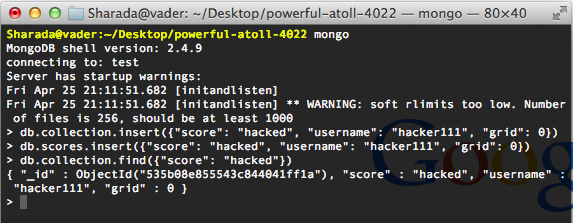
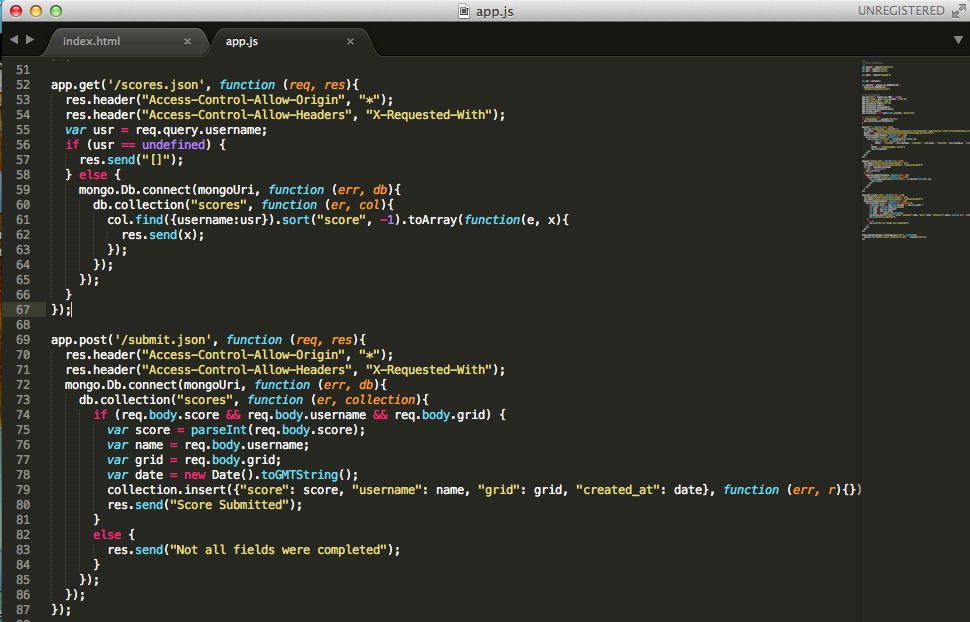

This assignment is a followup to the previous assignment, in which students made a 2048 Game Center application, which used a Mongo database to store final scores, usernames, and grids for the recent popular game 2048, created by Gabriele Cirulli. The goal of this assignment was to find security vulnerabilities in the Game Center of another student, Skyler Tom. For each vulnerability, documentation was sought for the issue, location, severity, and resolution.
"Black box" testing was the first method used, attempting to perform attacks without looking at any of the source code. The first security vulnerability described in this report was found in this manner. Following this, "white box" testing was done to search for vulnerabilities by looking at the code, and this revealed the second and third vulnerabilities described in this report.
There are several security vulnerabilities found in the Game Center app. The main reason behind most of the vulnerabilities is that the application does not properly check user input, and instead simply assumes that it will always be as expected. However, this leaves the door open for users with malicious intent to exploit this lack of validation by providing incorrect or unexpected input, which can unfortunately have serious consequences on the app's functionality. Fortunately, there are simple ways in which these types of issues can be resolved, to make a more secure application.
1. Issue: No input validation for usernames
Location: app.js
Severity: High. This provides easy access to hackers to insert malicious code as
use input, which could have consequences ranging from humorous to devastating,
depending on how evil the hacker wants to be.
Description: Because no checks are present, the user can give any input they want, such as a link to www.omfgdogs.com, which overwhelmed the database.

Fix: Add in code to check / validate the username input
(i.e., alphanumeric, no special characters, less than 10 characters in length).
2. Issue: The Mongo database is not protected
Location: app.js
Severity: Medium. Not protecting the database can lead to serious problems, but it
is not as easily accessed as Issue #1 (user needs some knowledge of Mongo to abuse
this vulnerability)
Description: Anyone can insert or remove or otherwise alter data in the
database simply by accessing Mongo from the terminal.

Fix: Enable authentication for Mongo
3. Issue: CORS - Universal Allow
Location: app.js
Severity: Medium. Like Issue #2, it is a potentially serious vulnerability, but it
takes a slightly more experienced/knowledgeable user to make use of this vulnerability.
Description: The * means that anything is allowed (universal), which could have serious repercussions because there is no restriction on what it could be.

Fix: Either add code to validate the response, or add in
a method of authentication for XMLHttpRequest
In conclusion, there were several different security vulnerabilities found in the 2048 Game Center application, which could have seriously negative ramification if taken advantage by a malicious user. Fortunately, the vulnerabilities can be resolved relatively easily, and by resolving these issues, the application will be much more secure.